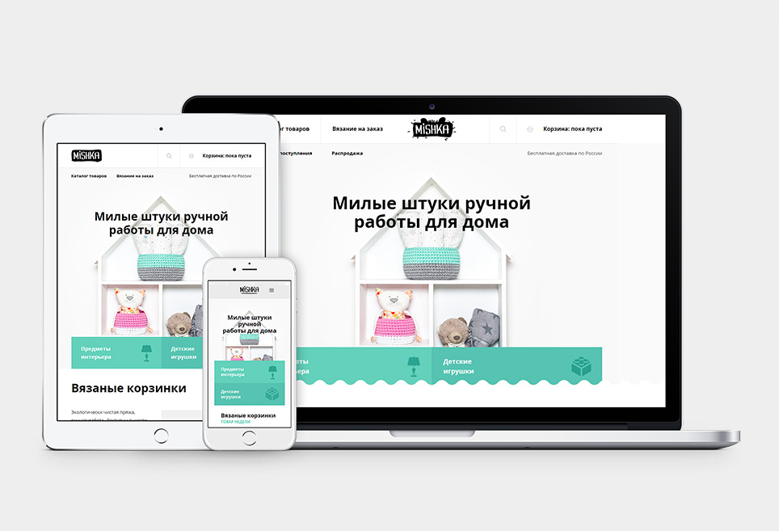
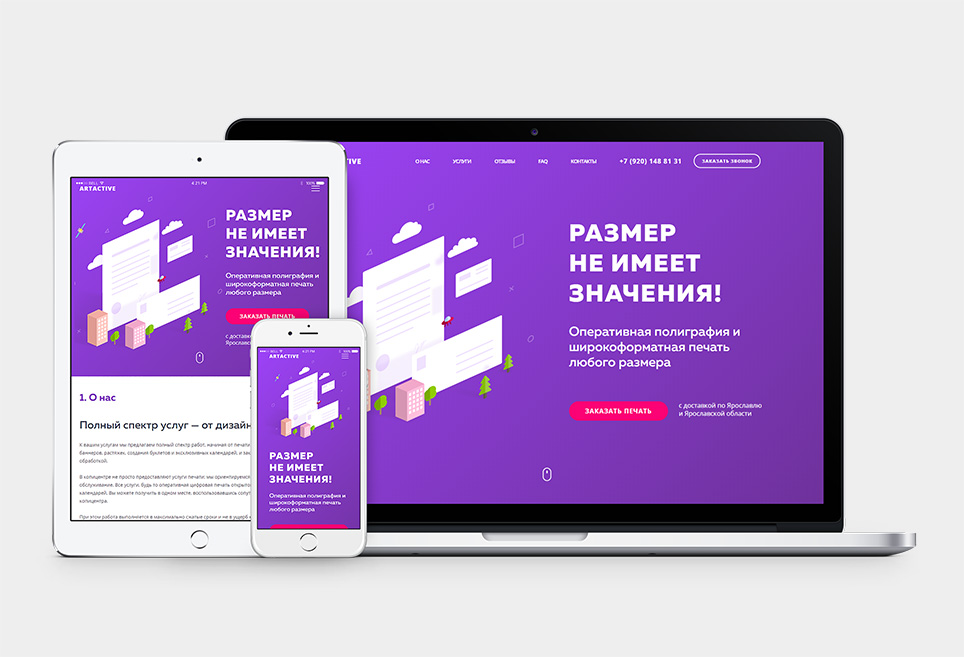
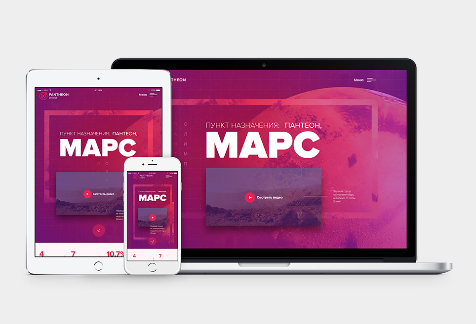
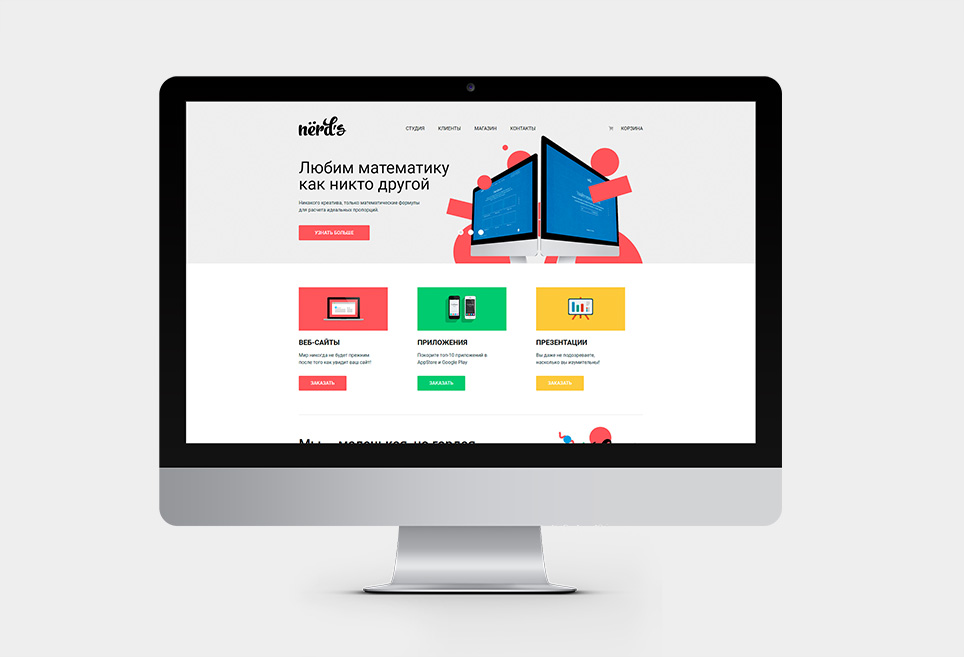
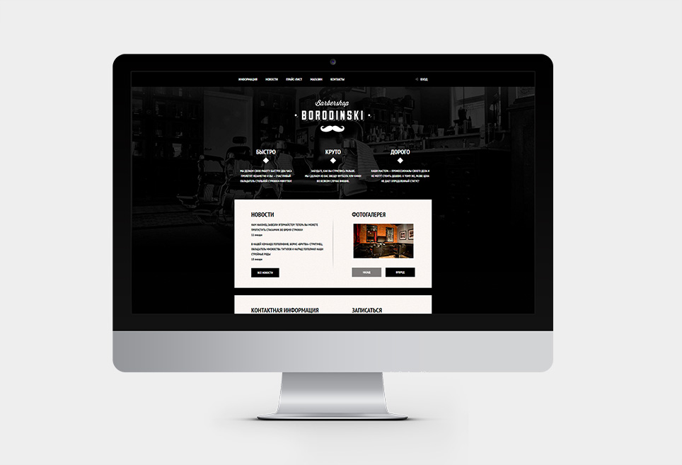

Евгений Шадрин
html-верстальщик / junior frontend разработчикработаю с любовью
Обо мне
В мои навыки входит адаптивная, кроссбраузерная, валидная, семантичная, доступная верстка: содание сетки на flexbox-ах, адаптивной графики, стилизация с использованием препроцессора SASS/LESS, автоматизация с помощью Gulp и управление версиями посредством git, github. Добавить интерактивных элеметнов в проект мне помогают базовые знания Javascript. Я окончил курсы на LinkedIn Learning и 2 уровня интерактивных онлайн-курсов html academy "Профессиональный html и css".
Мои основные навыки
- html5
- css3
- sass/less
- gulp/grunt
- javascript
- git
Примеры работ
-

Mishka
Интернет-магазин вязаных игрушек
Верстка страниц: главная, вязание на заказ, каталог товаров; Стандарты вёрстки: HTML5, CSS3; Сетка: адаптивная на flexbox; Методология: БЭМ; Препроцессор: Sass; Инструмент автоматизации: Gulp; Валидность validator.w3.org; кроссбраузерность: Chrome, Firefox, Opera, Safari, Edge
Перейти на страницу проекта Mishka -

Artactive
Полиграфическая компания
Верстка страниц: главная; Стандарты вёрстки: HTML5, CSS3; Сетка: адаптивная на flexbox; Методология: БЭМ; Препроцессор: Sass; Инструмент автоматизации: Gulp; Валидность validator.w3.org; кроссбраузерность: Chrome, Firefox, Opera, Safari, Edge
Перейти на страницу проекта Artactive -

Panteon
Проект колонии на Марсе
Верстка страниц: главная; Стандарты вёрстки: HTML5, CSS3; Сетка: адаптивная на flexbox; Методология: БЭМ; Препроцессор: Sass; Инструмент автоматизации: Gulp; Валидность validator.w3.org; кроссбраузерность: Chrome, Firefox, Opera, Safari, Edge
Перейти на страницу проекта Panteon -

Nerds
Cайт дизайн-студии
Верстка страниц: главная, магазин; Стандарты вёрстки: HTML5, CSS3; Сетка: десктопная на flexbox; Валидность validator.w3.org; кроссбраузерность: IE11+, Edge, Chrome, Firefox, Opera, Safari
Перейти на страницу проекта Nerds -

Barbershop
Сайт салоны красоты. Для мужчин.
Верстка страниц: главная, прайс-лист, магазин, карточка товара; Стандарты вёрстки: HTML5, CSS3; Сетка: десктопная на flexbox; Валидность validator.w3.org; кроссбраузерность: IE11+, Edge, Chrome, Firefox, Opera, Safari
Перейти на страницу проекта Barbershop